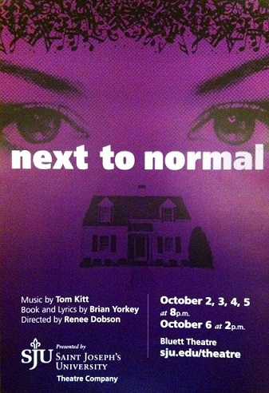

Theatre
Broadway Baby
Theatre is my absolute favorite thing in the world. I listen to Broadway showtunes more than I should, and make at least three references to shows daily. I have done theatre since I was twelve, and have done everything from costumes to acting to props to stage managing. I acted throughout my four years in high school and it was an absoulte blast. I took that into college, and you can find me assistant stage managing our spring production of Avenue Q, which I am beyond excited for.
Click on the posters for more info on each show I've done while at SJU!
